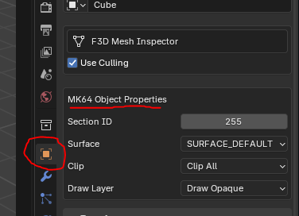

- Generated by
 1.9.8
1.9.8
|
SpaghettiKart
|

The kind of driving surface the player is on. Dirt and sand will slow you down. Asphalt is driving on a road, etc.
This sets if the object can be driven through or not. And if objects in the environment collide with it. Generally, this value only needs to be changed under certain circumstances
No collision. Players can drive through this object.
A normal wall collision presuming the player can never access the other side of the wall. If they do, they will drive through the object.
Not necessary to be set. But if for some reason you need to force a mesh to be a surface, this is here for that.
Required if making a fence where the player can access both sides of the wall. The collision generator is not good at recognizing that you want a double-sided wall and for performance reasons will not provide collision for the other side. This means the player can drive through one side, but not the other. Double-sided wall fixes this so no matter what side the wall is approached from, the player cannot drive through the wall.
Object draw order matters for transparent objects. Thus, transparent objects must be drawn after opaque objects.
Pretty self-explanatory. The draw phase gets completely cut from the object. This is useful for invisible walls
A normal object. It is not transparent.
A transparent object. If you do not set this for transparent objects, the order of drawn objects will be wrong.
Objects set to this ignore the ZBuffer. This means they are always visible on the screen, no matter the distance. The HM64 Labs Gizmo grab handles for instance are set to this (used for translating objects).